Guía rápida del nadador
Reservas de natación, en el móvil.
1. Entrar
Abre la web de reservas y pulsa Iniciar sesión. Escribe tu correo y tu contraseña y pulsa Acceder.
- Cuando te dieron de alta, te llegó un correo para elegir la contraseña.
- Si no la recuerdas, pulsa ¿Has olvidado tu contraseña?.
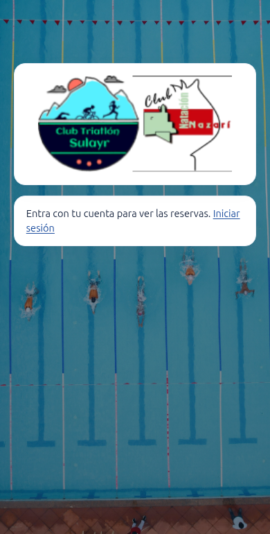
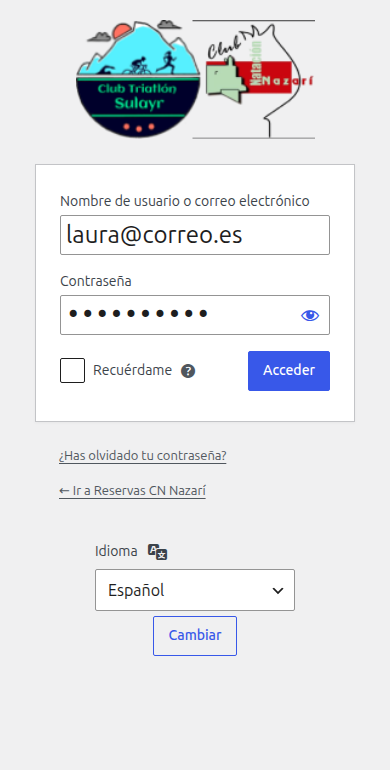
3. Calendario
Se ve un día. Cambia de día con las flechas, tocando el día arriba o deslizando el dedo hacia los lados.
Cada sesión indica su hora y su estado, y cuántas plazas quedan:
- Disponible: puedes reservar.
- Reservada por ti: ya tienes plaza.
- Completa: no quedan plazas.
- Deshabilitada: no admite reservas.
- Ya ha comenzado: ya no se puede reservar.
Detalle abre la sesión. Ahí está Nadadores apuntados, con el nombre y la foto de quien ha reservado. Si tienes plaza, tu ficha sale destacada y con Cancelar mi reserva mientras falte al menos una hora.
Horario habitual: de lunes a jueves de 15:00 a 16:30 y de 21:00 a 22:30, y los sábados de 13:00 a 14:30. Los viernes y los domingos no hay sesión.
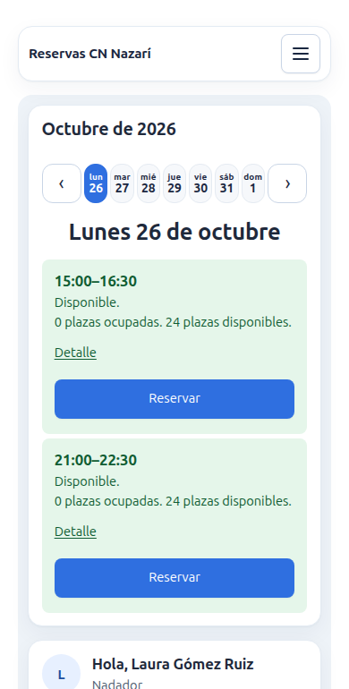
4. Reservar una sesión
- En el Calendario, busca el día y una sesión Disponible.
- Pulsa Reservar.
- Arriba sale «Reserva creada.» y la sesión pasa a Reservada por ti.
No podrás reservar si:
- la sesión está completa o deshabilitada,
- ya ha empezado,
- ya tienes plaza en ella,
- o has llegado a tu límite de la semana.
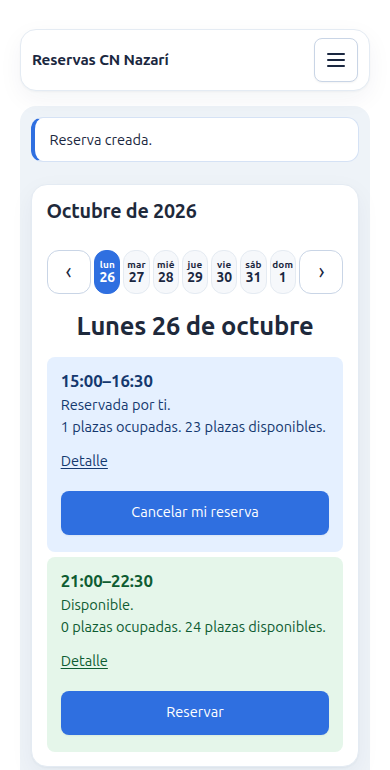
5. Límite semanal
Cada nadador puede reservar un número máximo de sesiones por semana.
- Al llegar al máximo sale «Se ha alcanzado el máximo de reservas de la semana.» y no se crea la reserva.
- Si cancelas una reserva de esa semana, vuelves a tener hueco.
- Si el gestor te apunta a una sesión, también cuenta.
En el Calendario, más abajo, Tu resumen muestra cuántas reservas llevas esta semana y tu límite, por ejemplo 2 / 2. Tu próxima sesión te recuerda la siguiente que tienes.
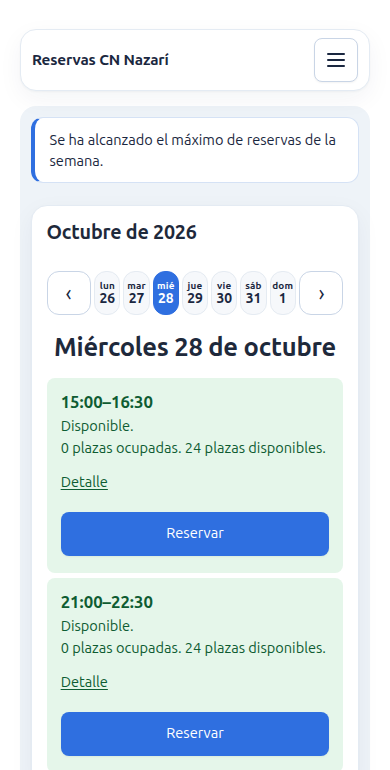
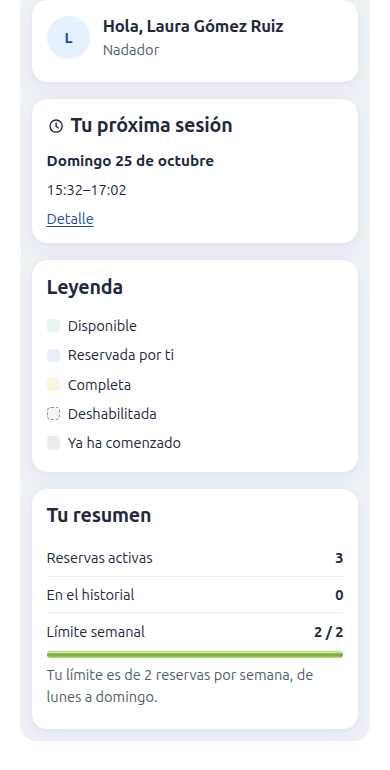
6. Mis reservas
- Reservas activas: sesiones que todavía no han empezado. Junto a cada una está Cancelar, si aún estás a tiempo.
- Historial: sesiones a las que ya fuiste. Si el gestor te apuntó, pone «Añadida por un gestor».
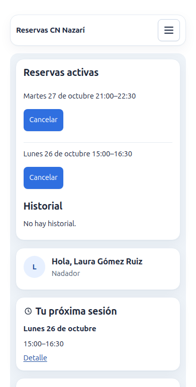
7. Cancelar una reserva
- Entra en Mis reservas, o abre el día de la sesión en el Calendario.
- Pulsa Cancelar (en el calendario, Cancelar mi reserva).
- Arriba sale «Reserva cancelada.».
La plaza queda libre para otra persona y deja de contar en tu límite de esa semana.
Puedes cancelar hasta una hora antes del inicio de la sesión.
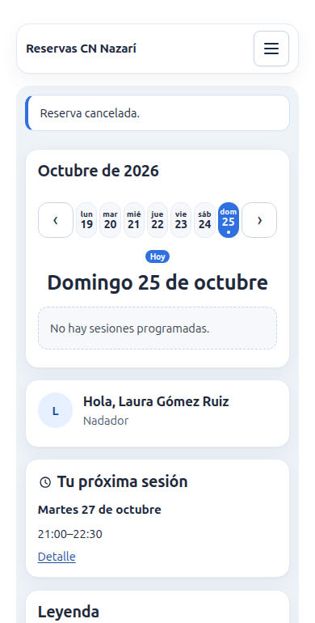
8. Menos de una hora antes: ya no se puede cancelar
Solo puedes cancelar hasta una hora antes del inicio. Por ejemplo, en una sesión de las 21:00 puedes cancelar hasta las 20:00 en punto.
Cuando falta menos de una hora, el botón Cancelar desaparece, en el calendario y en Mis reservas. La plaza sigue siendo tuya.
Si tenías la página abierta desde antes y pulsas Cancelar fuera de plazo, sale «Ya no se puede cancelar esta reserva.» y la reserva no se borra.
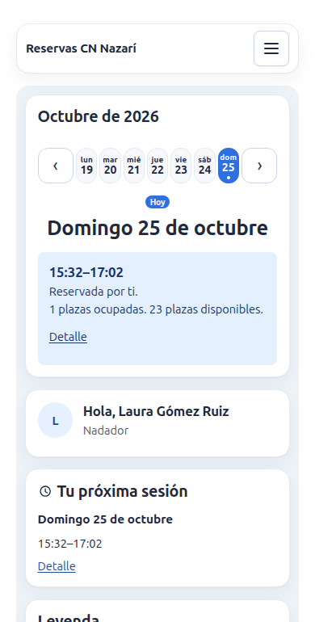
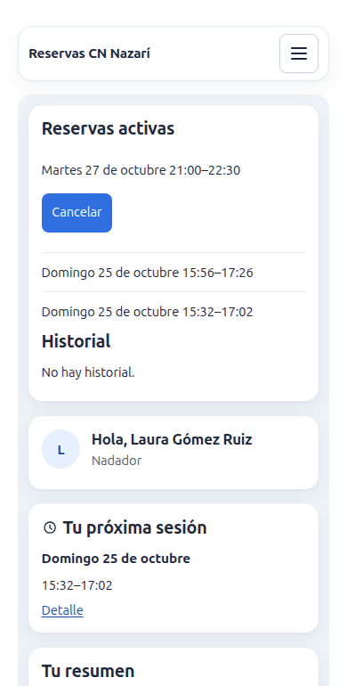
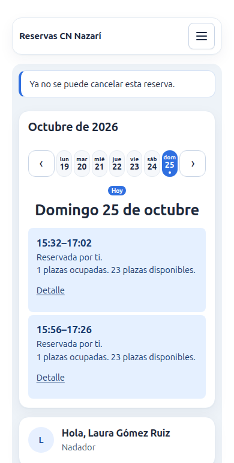
9. Mi perfil
Ves tu nombre, apellidos, correo, teléfono, DNI y tu límite semanal. El límite solo lo cambia el gestor.
- Nombre, apellidos o teléfono: cámbialos y pulsa Guardar datos.
- Solicitar cambio de correo: llega un enlace al correo nuevo. Tienes 24 horas para abrirlo. Hasta entonces sigues entrando con el anterior.
- Guardar fotografía: JPG, PNG o WebP, hasta 5 MB.
- Cambiar contraseña: escribe la actual y dos veces la nueva.
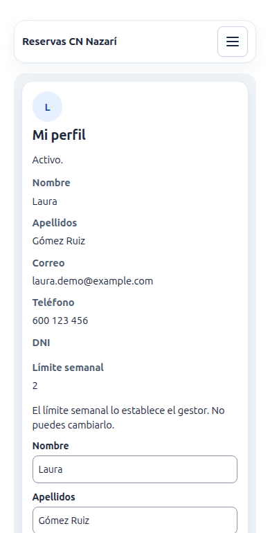
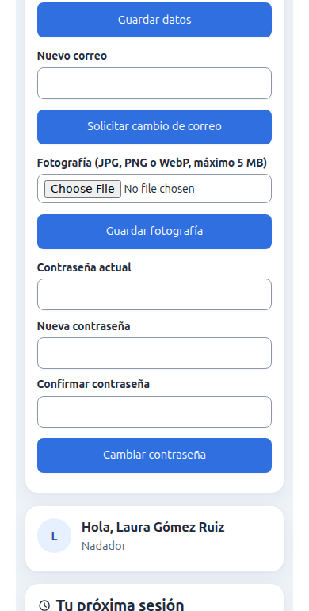
10. Cerrar sesión
En el menú, pulsa Cerrar sesión.
11. Si algo no sale
| Lo que ves | Qué hacer |
|---|---|
| «Entra con tu cuenta para ver las reservas» | Pulsa Iniciar sesión. |
| «No puedes acceder al sistema de reservas» | Tu ficha está desactivada. Habla con el gestor. |
| «No quedan plazas» | Elige otra sesión. |
| «Se ha alcanzado el máximo de reservas de la semana» | Cancela otra de esa semana o reserva en la siguiente. |
| «Ya no se puede cancelar esta reserva» | Falta menos de una hora. |
| No aparece el botón Cancelar | Falta menos de una hora, o la sesión ya empezó. |
12. Acceso directo en el móvil
Pon la web de reservas en la pantalla de inicio del móvil para abrirla con un toque, como una aplicación más. Hazlo una sola vez.
Las imágenes de este apartado son dibujos orientativos. Los menús pueden cambiar un poco según el modelo y la versión del móvil.
iPhone (Safari)
- Abre la web de reservas en Safari y pulsa el botón Compartir (el cuadrado con una flecha hacia arriba). En las versiones más recientes está dentro del botón ···.
- Baja y pulsa Añadir a pantalla de inicio. Si no aparece, pulsa antes Ver más.
- Si quieres, cambia el nombre, por ejemplo «Reservas natación».
- Pulsa Añadir.
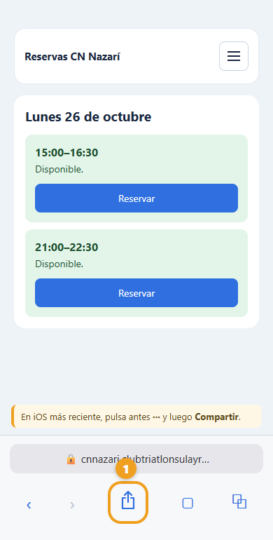
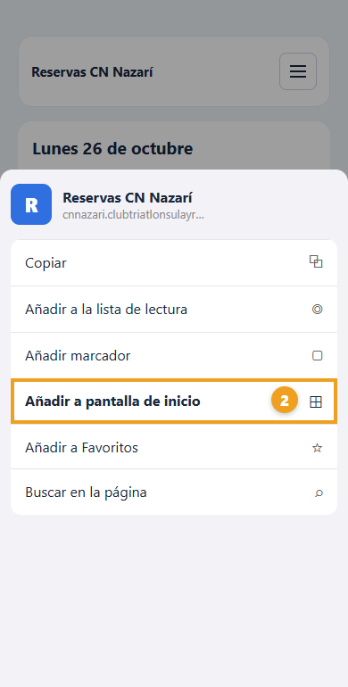
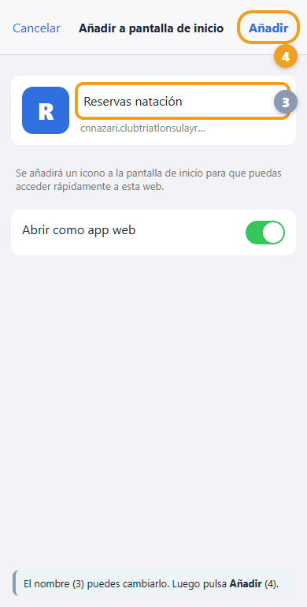
Android (Chrome)
- Abre la web de reservas en Chrome y pulsa el botón de los tres puntos, arriba a la derecha.
- Pulsa Añadir a pantalla de inicio. En algunos móviles pone Instalar aplicación.
- Si quieres, cambia el nombre.
- Pulsa Añadir. Si el móvil lo pide, confirma otra vez con Añadir.
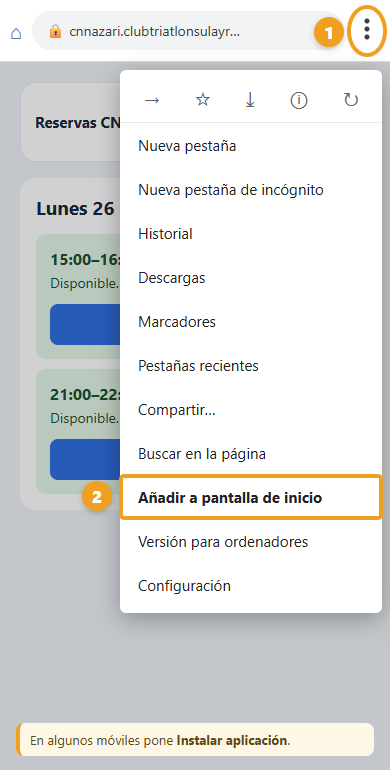
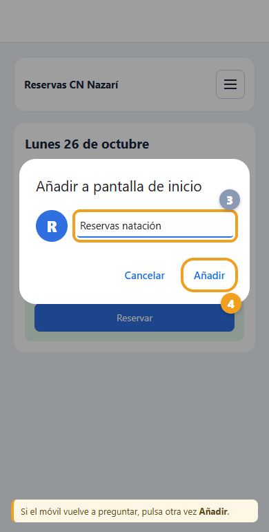
Resultado
El icono aparece en la pantalla de inicio. Si ya has iniciado sesión, al abrirlo entras directamente.
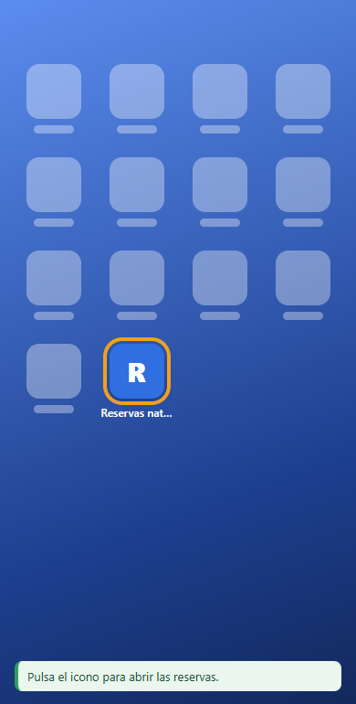